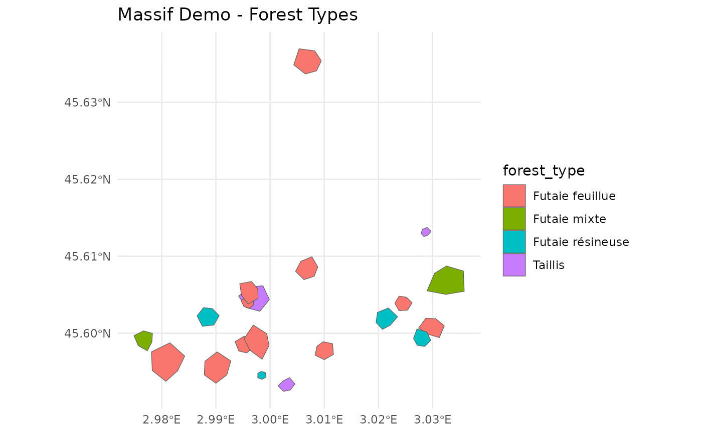

Synthetic forest dataset for demonstrating the nemeton package functionality. Contains 20 forest parcels with associated spatial layers covering a 5km x 5km area in France (Lambert-93 projection).
Extended demonstration dataset containing 20 forest parcels with all 29 indicators across the complete 12-family referential for ecosystem services assessment. This dataset is synthetically generated for package demonstration and testing purposes.
Format
An sf object with 20 features and 5 fields:
- parcel_id
Character. Unique parcel identifier (P01-P20)
- forest_type
Character. Forest type:
"Futaie feuillue" - Broadleaf high forest
"Futaie résineuse" - Coniferous high forest
"Futaie mixte" - Mixed high forest
"Taillis" - Coppice
- age_class
Character. Stand age class:
"Jeune" - Young (< 40 years)
"Moyen" - Middle-aged (40-80 years)
"Mature" - Mature (80-120 years)
"Surannée" - Over-mature (> 120 years)
- management
Character. Management objective:
"Production" - Timber production
"Conservation" - Biodiversity conservation
"Mixte" - Mixed objectives
- surface_ha
Numeric. Parcel area in hectares
- geometry
sfc_POLYGON. Parcel boundaries (EPSG:2154)
An sf object with 20 forest parcels and 100+ columns:
- id
Numeric parcel identifier (1-20)
- name
Parcel name (Parcel_01 to Parcel_20)
- parcel_id
Legacy identifier (P01-P20)
- species
Tree species code (4-letter IFN codes: FASY, PIAB, QUPE, etc.)
- area_ha
Parcel area in hectares
- forest_type
Forest type classification
- age_class
Forest age class
- management
Management objective
- geometry
Spatial geometry (POLYGON, EPSG:2154 - Lambert 93)
Family C - Carbon & Vitality (2 indicators):
- C1
Biomass carbon stock (tC/ha)
- C2
NDVI trend (annual rate of change)
Family B - Biodiversity (3 indicators):
- B1
Protection status (0=none, 1=local, 2=regional, 3=national)
- B2
Structural diversity index
- B3
Landscape connectivity (0-1)
Family W - Water Regulation (3 indicators):
- W1
Hydrographic network density (km/ha)
- W2
Wetland area percentage
- W3
Topographic Wetness Index
Family A - Air Quality & Microclimate (2 indicators):
- A1
Forest cover within 1km buffer (0-1)
- A2
Air quality index
Family F - Soil Fertility (2 indicators):
- F1
Soil fertility class (1-5)
- F2
Slope percentage (erosion risk)
Family L - Landscape & Aesthetics (2 indicators):
- L1
Landscape fragmentation index (0-1)
- L2
Edge-to-area ratio
Family T - Temporal Dynamics (2 indicators):
- T1
Forest ancientness (years)
- T2
Land cover change rate (percentage)
Family R - Risk Management & Resilience (3 indicators):
- R1
Fire risk level (1-5)
- R2
Storm/windthrow risk (1-5)
- R3
Water stress index (0-1)
Family S - Social & Recreational (3 indicators) - NEW v0.4.0:
- S1
Trail density (km/ha)
- S2
Accessibility score (0-100)
- S3
Population proximity (persons within 5/10/20km)
Family P - Productive & Economic (3 indicators) - NEW v0.4.0:
- P1
Standing timber volume (m³/ha)
- P2
Site productivity (m³/ha/yr)
- P3
Timber quality score (0-100)
Family E - Energy & Climate (2 indicators) - NEW v0.4.0:
- E1
Fuelwood potential (tonnes DM/yr)
- E2
CO2 emission avoidance (tCO2eq/yr)
Family N - Naturalness & Wilderness (3 indicators) - NEW v0.4.0:
- N1
Infrastructure distance (m)
- N2
Forest continuity (ha)
- N3
Wilderness composite score (0-100)
Normalized indicators:
- *_norm
Normalized versions (0-100 scale) for all 29 indicators
Family composite indices:
- famille_carbone, famille_biodiversite, ..., famille_naturalite
Aggregated family scores (0-100)
Source
Synthetic data generated with data-raw/massif_demo.R
Synthetically generated using data-raw/generate_extended_demo.R.
Based on:
French National Forest Inventory (IFN) allometric equations
ADEME Base Carbone® emission factors
OpenStreetMap infrastructure data patterns
INSEE population distribution models
Details
The dataset includes:
**Parcels** (massif_demo_units):
- 20 forest parcels (2-20 ha each, 136 ha total)
- Realistic spatial clustering and irregular shapes
- Diverse forest types and management regimes
**Rasters** (25m resolution, in inst/extdata/):
- massif_demo_biomass.tif: Aboveground biomass (50-400 Mg/ha)
- massif_demo_dem.tif: Digital Elevation Model (350-700m)
- massif_demo_landcover.tif: Land cover (6 classes, 85% forest)
- massif_demo_species_richness.tif: Species richness (5-45 species)
**Vector layers** (in inst/extdata/):
- massif_demo_roads.gpkg: 5 roads (types: Départementale, Forestière, Chemin)
- massif_demo_water.gpkg: 3 water courses (types: Ruisseau, Rivière, Torrent)
All spatial data use Lambert-93 projection (EPSG:2154).
Generated with set.seed(42) for reproducibility.
This dataset extends massif_demo_units with complete indicator coverage
across all 12 families in the nemeton ecosystem services framework. It includes:
29 primary indicators measuring different ecosystem service dimensions
29 normalized indicators (0-100 scale) for direct comparison
12 family composite indices aggregating related indicators
Spatial coverage: Synthetic 5km × 5km forest area in Lambert 93
Realistic value ranges: Based on French forest inventory data (IFN)
The data generation methodology combines:
Allometric models from IFN for volume calculations
ADEME emission factors for climate indicators
Spatial relationships (accessibility, naturalness, continuity)
Stochastic variation to simulate real-world heterogeneity
Data Generation
The dataset was created synthetically to represent typical French forest landscapes: - Biomass: Spatial gradient with patches and noise - Topography: Realistic elevation with gentle slopes - Land cover: Spatially coherent forest/non-forest classes - Species richness: Correlated with biomass and habitat diversity - Infrastructure: Sinuous roads and topography-following streams
Usage
Use massif_demo_layers to load all associated spatial layers:
# Load parcels
data(massif_demo_units)
# Load all layers
layers <- massif_demo_layers()
# Compute indicators
results <- nemeton_compute(massif_demo_units, layers, indicators = "all")This dataset is ideal for:
Package vignettes demonstrating multi-criteria analysis
Testing visualization functions (radar plots, correlation matrices)
Prototyping composite indices and decision support tools
Educational examples of ecosystem services assessment
Families v0.4.0
The complete 12-family referential includes:
v0.2.0: C, W, F, L (biophysical services)
v0.3.0: B, A, T, R (biodiversity, climate, temporal, risks)
v0.4.0: S, P, E, N (social, productive, energy, naturalness)
See also
massif_demo_layers, nemeton_compute
massif_demo_units for the base dataset without indicators.
create_family_index for creating family composites.
normalize_indicators for indicator normalization.
nemeton_radar for visualizing the 12-family profile.
Examples
# Load the demo dataset
data(massif_demo_units)
# Inspect parcels
print(massif_demo_units)
#> Simple feature collection with 20 features and 89 fields
#> Geometry type: POLYGON
#> Dimension: XY
#> Bounding box: xmin: 698041.8 ymin: 6499215 xmax: 702793.8 ymax: 6504159
#> Projected CRS: RGF93 v1 / Lambert-93
#> First 10 features:
#> parcel_id forest_type age_class management species age
#> 1 P01 Futaie mixte Mature Mixte 09 68
#> 2 P02 Futaie résineuse Moyen Production 64 33
#> 3 P03 Futaie feuillue Surannée Conservation 03 104
#> 4 P04 Futaie feuillue Surannée Production 03 166
#> 5 P05 Futaie résineuse Moyen Production 61 47
#> 6 P06 Futaie résineuse Mature Production 61 79
#> 7 P07 Futaie feuillue Mature Mixte 03 75
#> 8 P08 Futaie feuillue Mature Production 52 71
#> 9 P09 Futaie mixte Moyen Production 03 48
#> 10 P10 Taillis Surannée Production 52 165
#> establishment_year density height dbh volume strata fertility climate
#> 1 1958 266 30.3 45.8 557.7 4 1 continental
#> 2 1993 465 30.4 57.5 1541.7 1 3 atlantique
#> 3 1922 128 31.7 41.7 232.7 2 2 atlantique
#> 4 1860 104 29.9 42.6 186.1 2 1 atlantique
#> 5 1979 324 27.5 51.5 779.5 2 2 atlantique
#> 6 1947 281 38.6 76.1 2072.1 2 1 atlantique
#> 7 1951 184 33.9 47.1 456.5 2 3 continental
#> 8 1955 169 27.2 38.8 228.3 3 2 montagnard
#> 9 1978 369 24.8 34.0 349.0 4 3 atlantique
#> 10 1861 632 25.7 34.0 619.4 2 2 montagnard
#> surface_ha geometry C1 C2 B1
#> 1 4.989211 POLYGON ((698299.9 6499928,... 271.52938 0.6447576 67.56073
#> 2 5.867935 POLYGON ((701702.2 6500418,... 300.00000 0.6056744 98.28172
#> 3 6.557777 POLYGON ((702240.4 6500270,... 110.16193 0.5285871 75.95443
#> 4 9.989553 POLYGON ((700641.3 6504129,... 93.23794 1.1674470 56.64884
#> 5 5.906395 POLYGON ((699268.2 6500307,... 300.00000 0.6314632 84.96897
#> 6 1.048296 POLYGON ((699943.5 6499421,... 300.00000 0.9846671 18.94739
#> 7 17.079363 POLYGON ((698500.5 6499360,... 228.09783 0.9382652 27.12866
#> 8 11.414577 POLYGON ((699061.9 6499649,... 101.31511 0.7939883 82.81585
#> 9 16.105209 POLYGON ((702258.5 6500666,... 187.32636 0.9300316 69.32048
#> 10 10.733433 POLYGON ((699897.1 6500739,... 277.78929 0.9703610 24.05447
#> B2 B3 W1 W2 W3 A1 A2 F1
#> 1 48.05999 46.75415 1.1875729 37.392918 11.262508 100.00000 48.38184 1
#> 2 30.72276 50.79763 0.6421157 22.019763 10.763668 100.00000 73.07190 3
#> 3 65.58163 63.01069 3.7125564 24.070649 5.852777 68.22187 48.53609 2
#> 4 71.39962 64.22587 6.2349453 7.879780 5.333345 100.00000 55.56960 1
#> 5 25.31719 73.97430 5.8682237 21.409464 9.680398 100.00000 72.48102 2
#> 6 53.99485 49.62298 6.5378436 7.182230 9.726250 100.00000 69.09907 1
#> 7 40.21940 88.94029 1.3612999 18.075460 11.261136 99.31616 52.97349 3
#> 8 61.44101 92.19277 7.5577626 12.682134 10.138721 80.99475 52.47895 2
#> 9 35.01887 37.51426 2.3489907 4.646987 4.199967 97.72290 69.96364 3
#> 10 84.88981 74.33732 1.1925764 7.444086 5.589748 100.00000 92.02824 2
#> F2 L1 L2 T1 T2 R1 R2 R3
#> 1 25.019879 57.94143 49.02609 68 7.745998 35.404437 63.67438 10.975559
#> 2 4.315520 32.99353 46.67417 33 7.087985 56.732381 55.62368 75.739443
#> 3 10.886737 41.24140 23.62314 104 2.554360 5.098883 67.18918 37.155495
#> 4 33.100871 88.95956 39.65036 166 5.036521 73.789178 40.38996 33.317838
#> 5 17.500878 49.69644 72.70574 47 10.166800 57.295560 40.61244 44.912393
#> 6 4.733067 40.25978 75.83629 79 16.832511 36.984480 93.48662 35.748304
#> 7 30.424024 59.29529 43.53071 75 6.451203 11.019857 73.85662 32.358239
#> 8 7.176736 31.12124 29.53081 71 15.156129 52.860174 63.19731 64.535748
#> 9 32.376606 50.36911 39.19686 48 13.003366 49.663877 76.82843 30.659396
#> 10 31.036376 31.77980 38.41794 165 13.513248 39.872887 53.33232 9.327956
#> R4 S1 S2 S3 P1 P2 P3 E1
#> 1 24.564726 0.6142734 80.64513 57354.57 582.4222 4.990758 60.95405 11.132573
#> 2 48.959040 0.7971139 89.99527 76907.49 1000.0000 9.520484 79.39129 15.000000
#> 3 5.968351 2.3380220 82.53975 41461.33 215.6208 6.577982 62.21006 4.219383
#> 4 20.677678 3.6500435 29.52521 13962.24 205.1654 6.470144 62.59759 2.608120
#> 5 24.612972 0.5191291 68.70905 45003.21 780.8117 6.207055 89.59382 15.000000
#> 6 22.180692 4.0203980 71.77637 60740.65 1000.0000 4.884225 87.84672 15.000000
#> 7 56.974140 2.5890880 22.40336 53357.71 530.2878 8.964739 78.55470 10.287347
#> 8 29.544706 0.6595758 89.03669 17989.83 203.7486 8.485887 59.11573 2.883519
#> 9 34.884517 4.0626261 55.88517 27667.98 285.6040 5.507209 45.64794 7.067319
#> 10 11.152566 1.1385111 39.98904 25586.54 627.6109 6.433025 53.31236 13.741362
#> E2 N1 N2 N3 C1_norm C2_norm B1_norm
#> 1 24.491660 1961.124 9009.2192 70.3324503 89.83192 18.18404 68.69188
#> 2 30.000000 5976.014 5456.9475 0.3475665 100.00000 12.06639 100.00000
#> 3 9.282643 1398.919 5089.7033 59.2891167 32.20069 0.00000 77.24599
#> 4 5.737864 3606.938 8946.6803 100.0000000 26.15641 100.00000 57.57144
#> 5 30.000000 3052.444 8478.4504 20.5651477 100.00000 16.10308 86.43282
#> 6 30.000000 7762.738 3903.8072 36.2273780 100.00000 71.38969 19.14945
#> 7 22.632164 3562.190 484.7918 32.9283307 74.32065 64.12644 27.48708
#> 8 6.343742 4232.655 7395.7756 44.4674909 29.04111 41.54295 84.23855
#> 9 15.548102 4227.145 8797.3736 44.9614412 59.75941 62.83765 70.48526
#> 10 30.000000 5757.186 3592.2587 92.8142964 92.06760 69.15037 24.35414
#> B2_norm B3_norm W1_norm W2_norm W3_norm A1_norm A2_norm
#> 1 50.33336 28.62731 13.035855 100.000000 100.000000 100.00000 5.025117
#> 2 26.95334 34.97861 5.589419 53.053237 93.591755 100.00000 58.750856
#> 3 73.96207 54.16226 47.506263 59.316263 30.504976 30.98201 5.360775
#> 4 81.80788 56.07101 81.941248 9.872349 23.832197 100.00000 20.665725
#> 5 19.66369 71.38334 76.934862 51.189497 79.675744 100.00000 57.465104
#> 6 58.33678 33.13352 86.076335 7.742161 80.264772 100.00000 50.105960
#> 7 39.75998 94.89117 15.407530 41.008065 99.982382 98.51479 15.016584
#> 8 68.37826 100.00000 100.000000 24.537849 85.563496 58.72305 13.940455
#> 9 32.74684 14.11376 28.891225 0.000000 9.272475 95.05442 51.987274
#> 10 100.00000 71.95356 13.104162 8.541823 27.126022 100.00000 100.000000
#> F1_norm F2_norm L1_norm L2_norm T1_norm T2_norm R1_norm
#> 1 0 71.926722 46.370969 45.50493 35.66879 45.88045 44.119121
#> 2 100 0.000000 3.237100 41.29189 13.37580 41.96130 75.168549
#> 3 50 22.828336 17.497324 0.00000 58.59873 14.95889 0.000000
#> 4 0 100.000000 100.000000 28.70996 98.08917 29.74272 100.000000
#> 5 50 45.805793 32.115731 87.92288 22.29299 60.29882 75.988429
#> 6 0 1.450555 15.800145 93.53071 42.67516 100.00000 46.419363
#> 7 100 90.700662 48.711735 35.66092 40.12739 38.16861 8.619812
#> 8 50 9.939834 0.000000 10.58256 37.57962 90.01542 69.531352
#> 9 100 97.483913 33.278733 27.89759 22.92994 77.19349 64.878152
#> 10 50 92.827967 1.138619 26.50229 97.45223 80.23037 50.624334
#> R2_norm R3_norm R4_norm S1_norm S2_norm S3_norm P1_norm
#> 1 55.33710 2.480901 32.323036 2.685042 86.591937 71.857692 58.23268
#> 2 43.27603 100.000000 67.877065 7.844928 100.000000 100.000000 100.00000
#> 3 60.60275 41.901695 5.219342 51.330450 89.308809 48.982723 21.54416
#> 4 20.45379 36.123091 26.657773 88.356628 13.286161 9.403583 20.49838
#> 5 20.78710 53.581750 32.393354 0.000000 69.475633 54.080517 78.07616
#> 6 100.00000 39.782798 28.848373 98.808295 73.874169 76.731251 100.00000
#> 7 70.59152 34.678162 79.558849 58.415709 3.073461 66.105055 53.01805
#> 8 54.62239 83.129884 39.581217 3.963506 98.625389 15.200453 20.35666
#> 9 75.04370 32.120106 47.363842 100.000000 51.086239 29.130106 28.54407
#> 10 39.84325 0.000000 12.775189 17.479401 28.291260 26.134312 62.75258
#> P2_norm P3_norm E1_norm E2_norm N1_norm N2_norm N3_norm
#> 1 17.55010 53.89207 74.21715 81.63887 12.965307 98.39928 70.3324503
#> 2 100.00000 83.57467 100.00000 100.00000 61.069681 57.39465 0.3475665
#> 3 46.44068 55.91417 28.12922 30.94214 6.229248 53.15548 59.2891167
#> 4 44.47782 56.53806 17.38747 19.12621 32.684614 97.67738 100.0000000
#> 5 39.68908 100.00000 100.00000 100.00000 26.040953 92.27251 20.5651477
#> 6 15.61098 97.18730 100.00000 100.00000 82.477298 39.46642 36.2273780
#> 7 89.88434 82.22784 68.58231 75.44055 32.148467 0.00000 32.9283307
#> 8 81.16830 50.93252 19.22346 21.14581 40.181634 79.77496 44.4674909
#> 9 26.95051 29.25037 47.11546 51.82701 40.115624 95.95390 44.9614412
#> 10 43.80218 41.58953 91.60908 100.00000 58.447791 35.87015 92.8142964
#> famille_carbone famille_biodiversite famille_eau famille_air famille_sol
#> 1 54.00798 49.21751 71.01195 52.51256 35.9633611
#> 2 56.03319 53.97732 50.74480 79.37543 50.0000000
#> 3 16.10034 68.45678 45.77583 18.17139 36.4141678
#> 4 63.07820 65.15011 38.54860 60.33286 50.0000000
#> 5 58.05154 59.15995 69.26670 78.73255 47.9028964
#> 6 85.69484 36.87325 58.02776 75.05298 0.7252773
#> 7 69.22355 54.04608 52.13266 56.76569 95.3503311
#> 8 35.29203 84.20560 70.03378 36.33175 29.9699172
#> 9 61.29853 39.11529 12.72123 73.52085 98.7419564
#> 10 80.60898 65.43590 16.25734 100.00000 71.4139836
#> famille_paysage famille_temporel famille_risque famille_social
#> 1 45.937952 40.77462 33.56504 53.71156
#> 2 22.264494 27.66855 71.58041 69.28164
#> 3 8.748662 36.77881 26.93095 63.20733
#> 4 64.354982 63.91594 45.80866 37.01546
#> 5 60.019306 41.29591 45.68766 41.18538
#> 6 54.665429 71.33758 53.76263 83.13790
#> 7 42.186329 39.14800 48.36209 42.53141
#> 8 5.291278 63.79752 61.71621 39.26312
#> 9 30.588161 50.06171 54.85145 60.07212
#> 10 13.820455 88.84130 25.81069 23.96832
#> famille_production famille_energie famille_naturalite
#> 1 43.22495 77.92801 60.56568
#> 2 94.52489 100.00000 39.60397
#> 3 41.29967 29.53568 39.55795
#> 4 40.50475 18.25684 76.78733
#> 5 72.58841 100.00000 46.29287
#> 6 70.93276 100.00000 52.72370
#> 7 75.04341 72.01143 21.69227
#> 8 50.81916 20.18463 54.80803
#> 9 28.24832 49.47123 60.34366
#> 10 49.38143 95.80454 62.37741
summary(massif_demo_units$surface_ha)
#> Min. 1st Qu. Median Mean 3rd Qu. Max.
#> 1.048 4.047 5.887 6.801 10.149 17.079
table(massif_demo_units$forest_type)
#>
#> Futaie feuillue Futaie mixte Futaie résineuse Taillis
#> 11 2 4 3
# Plot parcels
if (require("ggplot2")) {
ggplot(massif_demo_units) +
geom_sf(aes(fill = forest_type)) +
theme_minimal() +
labs(title = "Massif Demo - Forest Types")
}
#> Loading required package: ggplot2

if (FALSE) { # \dontrun{
# Complete workflow example
library(nemeton)
# 1. Load data
data(massif_demo_units)
layers <- massif_demo_layers()
# 2. Compute all indicators
results <- nemeton_compute(
massif_demo_units,
layers,
indicators = "all",
preprocess = TRUE
)
# 3. Normalize indicators
normalized <- normalize_indicators(
results,
indicators = c("carbon", "biodiversity", "water"),
method = "minmax"
)
# 4. Create ecosystem health index
health <- create_composite_index(
normalized,
indicators = c("carbon_norm", "biodiversity_norm", "water_norm"),
weights = c(0.4, 0.4, 0.2),
name = "ecosystem_health"
)
# 5. Visualize
plot_indicators_map(
health,
indicators = "ecosystem_health",
palette = "RdYlGn",
title = "Ecosystem Health - Massif Demo"
)
} # }
if (FALSE) { # \dontrun{
# Load the extended demo dataset
data("massif_demo_units")
# Explore structure
library(sf)
plot(massif_demo_units["famille_social"]) # Social services
plot(massif_demo_units["famille_energie"]) # Energy services
# Create 12-axis radar plot for parcel 1
library(nemeton)
nemeton_radar(
massif_demo_units,
unit_id = 1,
mode = "family"
)
# Compute correlations across all 12 families
cor_matrix <- compute_family_correlations(massif_demo_units)
plot_correlation_matrix(cor_matrix)
# Identify multi-service hotspots
hotspots <- identify_hotspots(
massif_demo_units,
threshold = 75,
min_families = 6
)
# Summary statistics
summary(massif_demo_units[, c(
"famille_social", "famille_production",
"famille_energie", "famille_naturalite"
)])
} # }